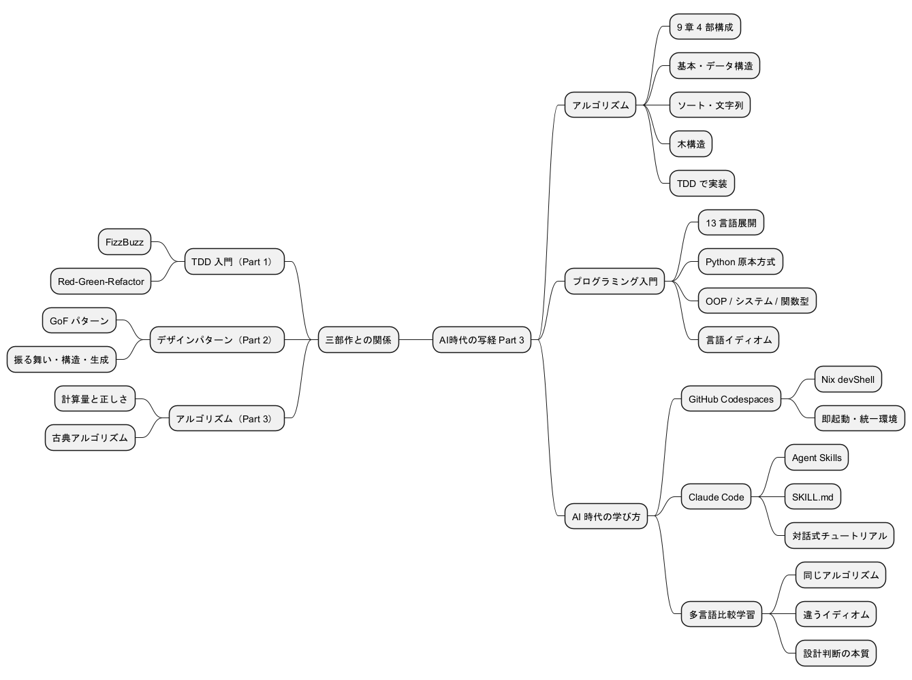
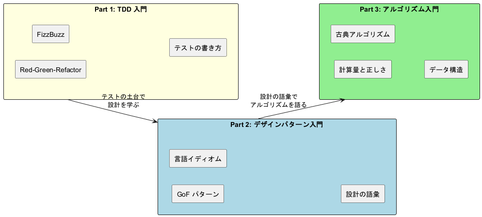
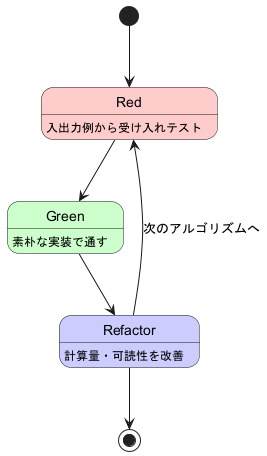
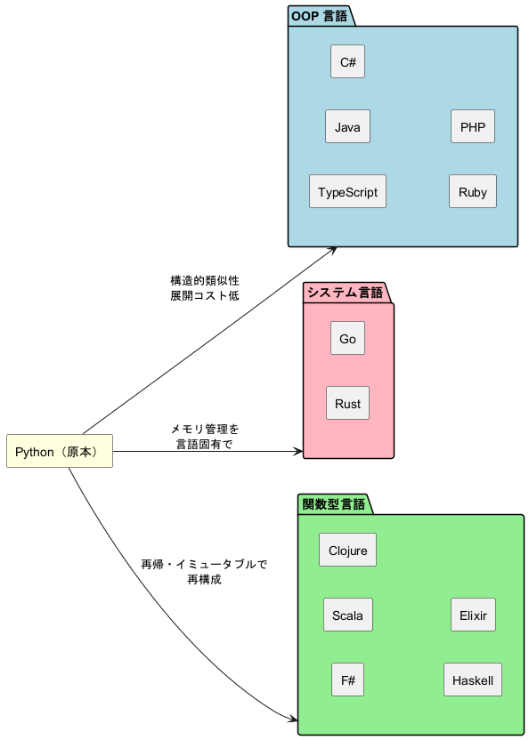
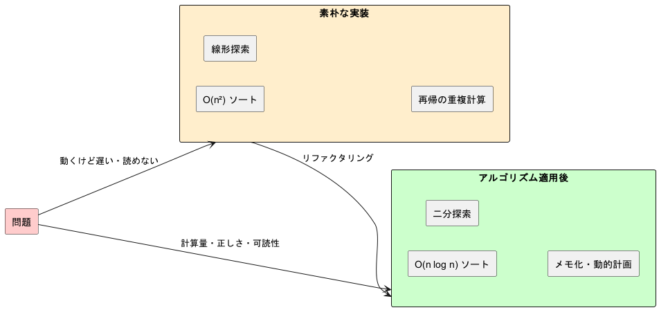
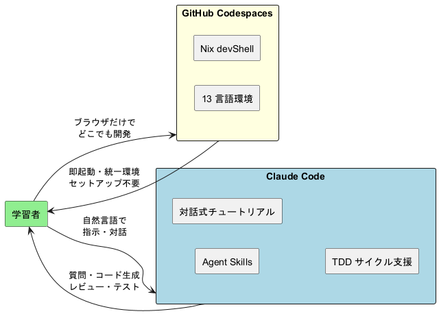
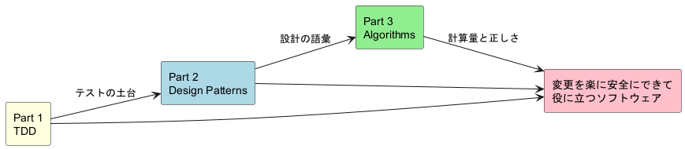

スライド.images
アルゴリズムから始めるプログラミング入門 AI 時代の写経 Part 3¶

構成¶
- 三部作の到達点
- アルゴリズムから始めるプログラミング入門
- アルゴリズムが解く問題
- 代表アルゴリズム 5 選
- 言語別イディオム比較
- TDD サイクルでの実装
- AI 時代の学び方
- Agent Skills
- デモ
- まとめ
三部作の到達点¶

- Part 1 で テストを書く力、Part 2 で 設計の語彙、Part 3 で 古典アルゴリズム を獲得
- 三部作通じて Red-Green-Refactor と 多言語比較学習 という共通装置を継続使用
アルゴリズムから始めるプログラミング入門¶
『新・明解 Python で学ぶアルゴリズムとデータ構造』を題材に、TDD で 13 言語のイディオムに沿ったアルゴリズム実装を体験するシリーズ

- 9 章 4 部構成。基本 → データ構造 → ソートと文字列 → 高度なデータ構造の順に深化
- 素朴な実装 → 計算量を意識した実装 の Before/After で性能の意味を体感
- 同じアルゴリズムを複数言語で実装し、言語の設計思想がアルゴリズム表現に与える影響を学ぶ
アルゴリズムから始めるプログラミング入門 対象 13 言語¶
| カテゴリ | 言語 | アルゴリズム理解の重点 |
|---|---|---|
| 原本 | Python | 動的型付き、リスト内包、可読性重視 |
| OOP | Java / C# / TypeScript / Ruby / PHP | クラス・コレクション・ジェネリクス |
| システム | Go / Rust | スライス、所有権、メモリ局所性 |
| 関数型 | F# / Scala / Clojure / Haskell / Elixir | 再帰、パターンマッチ、永続データ構造 |
- Python 版を原本として作成し、完成後に他 12 言語へ展開
- Wiki 記事が存在する Go / Haskell / Clojure / F# / TypeScript は補助参照
- Nix devShell で 13 環境を再現性ありで提供
アルゴリズムから始めるプログラミング入門 章構成¶
9 章 4 部構成。基本アルゴリズムからデータ構造、ソートと文字列、高度なデータ構造へ段階的に深化
| 部 | テーマ | 章 |
|---|---|---|
| 第 1 部 | 基本 | 1. 基本的なアルゴリズム / 2. 配列 / 3. 探索アルゴリズム |
| 第 2 部 | データ構造 | 4. スタックとキュー / 5. 再帰アルゴリズム |
| 第 3 部 | ソートと文字列 | 6. ソートアルゴリズム / 7. 文字列処理 |
| 第 4 部 | 高度なデータ構造 | 8. リスト / 9. 木構造 |
- 第 1 部で条件分岐・反復・配列操作という土台を確認
- 第 2 部で 抽象データ型 としてのスタック・キューと 再帰 を導入
- 第 3〜4 部で 計算量の比較 と 連結リスト・二分探索木 へ
Python 原本方式と多言語展開¶

- Python 版が最も完成度が高いため原本として位置付け
- OOP → システム → 関数型 の順に展開コストが上がる構造を意識
- 各言語の イディオムへの翻訳 が学びの中心
アルゴリズムが解く問題¶
「動けばいい」から「変更を楽に安全にできて役に立つ」へ

- アルゴリズムは 計算量・正しさ・可読性 を改善する設計判断
- 「銀の弾丸」ではなく、変更を楽に安全にできて役に立つコード にするための語彙
- TDD と組み合わせることで、安心してリファクタリング できる
代表アルゴリズム ① 第 1 章 3 値の最大値¶
#### コード（Python）
#### ポイント
- **条件分岐の網羅** が肝。13 通りの大小関係をテストで網羅
- 「変数 maximum を更新する」発想は **逐次更新** の基本パターン
- TDD では **境界値（等値ケース）** を見落とさないことが重要
def max3(a: int, b: int, c: int) -> int:
"""3 つの整数値の最大値を返す"""
maximum = a
if b > maximum:
maximum = b
if c > maximum:
maximum = c
return maximum

代表アルゴリズム ② 第 3 章 二分探索¶
#### コード（Python）
#### ポイント
- **計算量 O(log n)**。線形探索 O(n) と比べると 100 万要素で 20 ステップ
- **前提条件「ソート済み」** を満たさないと壊れる
- 配列を半分ずつ捨てる発想は **分割統治** の起点
def bseach(a, key):
"""ソート済み配列から二分探索で key を探す"""
pl, pr = 0, len(a) - 1
while True:
pc = (pl + pr) // 2
if a[pc] == key:
return pc
elif a[pc] < key:
pl = pc + 1
else:
pr = pc - 1
if pl > pr:
break
return -1

代表アルゴリズム ③ 第 5 章 ハノイの塔（再帰）¶
#### コード（Python）
#### ポイント
- **問題を一回り小さい同じ問題に帰着** させる再帰の典型例
- 「最大の円盤を動かす前と後」で問題を分解
- 計算量 **O(2ⁿ)**。再帰の威力と計算爆発を同時に体感
def hanoi(n, src, dst, via):
"""n 枚の円盤を src から dst へ via 経由で移動"""
if n == 1:
return [(src, dst)]
moves = []
moves.extend(hanoi(n - 1, src, via, dst))
moves.append((src, dst))
moves.extend(hanoi(n - 1, via, dst, src))
return moves

代表アルゴリズム ④ 第 6 章 クイックソート¶
#### コード（Python）
#### ポイント
- 平均 **O(n log n)**、最悪 O(n²)
- ピボットを軸に **分割統治** で再帰的にソート
- in-place なので追加メモリが少ない
def quick_sort(a, left=0, right=None):
if right is None:
right = len(a) - 1
if left >= right:
return
pivot = a[(left + right) // 2]
i, j = left, right
while i <= j:
while a[i] < pivot:
i += 1
while a[j] > pivot:
j -= 1
if i <= j:
a[i], a[j] = a[j], a[i]
i += 1
j -= 1
quick_sort(a, left, j)
quick_sort(a, i, right)

代表アルゴリズム ⑤ 第 9 章 二分探索木¶
#### コード（Python）
#### ポイント
- 平均 **O(log n)**、最悪 O(n)（木が偏ったとき）
- 二分探索の **動的データ構造** 版
- 第 8 章「連結リスト」での **ノードと参照** の理解が前提
def search(self, key):
"""キー key をもつノードを探索"""
p = self.root
while True:
if p is None:
return None
if key == p.key:
return p.value
elif key < p.key:
p = p.left
else:
p = p.right

言語別イディオム比較（探索編）¶
同じ二分探索でも、言語のイディオムでこれだけ姿が変わる
#### Java（OOP / 反復）
int bsearch(int[] a, int key) {
int pl = 0, pr = a.length - 1;
while (pl <= pr) {
int pc = (pl + pr) / 2;
if (a[pc] == key) return pc;
else if (a[pc] < key) pl = pc + 1;
else pr = pc - 1;
}
return -1;
}
#### Haskell（純粋関数型 / 再帰）
bsearch :: Ord a => [a] -> a -> Maybe Int
bsearch xs key = go 0 (length xs - 1)
where
go pl pr
| pl > pr = Nothing
| x == key = Just pc
| x < key = go (pc + 1) pr
| otherwise = go pl (pc - 1)
where pc = (pl + pr) `div` 2
x = xs !! pc
#### Clojure（LISP / 末尾再帰）
(defn bsearch [v key]
(loop [pl 0 pr (dec (count v))]
(if (> pl pr)
-1
(let [pc (quot (+ pl pr) 2)
x (v pc)]
(cond
(= x key) pc
(< x key) (recur (inc pc) pr)
:else (recur pl (dec pc)))))))
- Java は配列インデックスと while ループ、Haskell はパターンガードと
Maybe、Clojure はloop/recurで末尾再帰最適化 - 同じアルゴリズムでも言語の 抽象化軸 が違うとコードの粒度が変わる
言語別イディオム比較（ソート編）¶
クイックソートの典型表現を 3 言語で比較
#### Python（リスト内包）
def quick_sort(a):
if len(a) <= 1:
return a
pivot = a[len(a) // 2]
left = [x for x in a if x < pivot]
mid = [x for x in a if x == pivot]
right = [x for x in a if x > pivot]
return quick_sort(left) + mid + quick_sort(right)
#### F#（パターンマッチ）
let rec quickSort = function
| [] -> []
| pivot :: rest ->
let smaller, larger =
List.partition (fun x -> x < pivot) rest
quickSort smaller @ [pivot] @ quickSort larger
#### Rust（イテレータ）
fn quick_sort<T: Ord + Clone>(a: &[T]) -> Vec<T> {
if a.len() <= 1 { return a.to_vec(); }
let pivot = &a[a.len() / 2];
let smaller: Vec<T> = a.iter()
.filter(|x| *x < pivot).cloned().collect();
let equal: Vec<T> = a.iter()
.filter(|x| *x == pivot).cloned().collect();
let larger: Vec<T> = a.iter()
.filter(|x| *x > pivot).cloned().collect();
[quick_sort(&smaller), equal, quick_sort(&larger)].concat()
}
- Python はリスト内包、F# はリストパターンマッチ、Rust はイテレータ + 所有権
- 同じ「分割統治」が、言語の データ構造とメモリモデル によって違う形に翻訳される
TDD サイクルでの実装¶
#### Red-Green-Refactor
1. **Red**: 入出力例を受け入れテストに変換
2. **Green**: 素朴な実装でテストを通す（ブルートフォースで OK）
3. **Refactor**: 計算量・可読性・命名を改善
#### アルゴリズム特有のポイント
- **境界値テスト** が肝（空配列、要素 1 個、ソート済み、逆順）
- 計算量を意識したリファクタは Refactor フェーズに集中
- **同じ受け入れテスト** を 13 言語で再利用できる

AI 時代の学び方¶

- Codespaces + Nix devShell で 13 言語環境がブラウザだけで再現
- Claude Code Agent Skills が TDD サイクル・コード生成・レビューを支援
- 学習者は アルゴリズムの本質 に集中できる（環境構築の苦行からの解放）
Agent Skills 三部作の対話式チュートリアル¶
#### practicing-getting-start-tdd（既存）
- Part 1「テスト駆動開発から始めるプログラミング入門」
- **FizzBuzz** を題材に 14 言語 × 12 章
- Red-Green-Refactor を段階的にコーチ
#### practicing-getting-start-algorithm（新規）
- Part 3「アルゴリズムから始めるプログラミング入門」
- **古典アルゴリズム 9 章** を 14 言語で
- TDD + **計算量・不変条件・境界値** までコーチ
- `docs/article/{lang}/0N-*.md` を教材として参照

- 対話のトーン：教えるのではなく 一緒に学ぶ。コードを書くのはユーザー
- 記述方法：手動記述（学習効果重視）／自動記述（テンポ重視）を選択可能
practicing-getting-start-algorithm の進行モデル¶
#### Step 0〜4 の進行
0. **環境構築**：`apps/{lang}/` 確認・初期化
1. **言語選択**：Python / OOP / システム / 関数型
2. **章選択**：4 部 9 章。経験に応じて開始章を提案
3. **対話式チュートリアル**：入出力例 → テスト → 素朴実装 → 計算量改善
4. **KPT 振り返り**：Keep / Problem / Try
#### コーチング 5 観点
- **計算量**：O 記法 + n の具体値で直感補強
- **不変条件**：「ソート済み」「左 < 親 < 右」
- **境界値**：空・単一・ソート済み・逆順・重複
- **構造選択**：配列 vs 連結、ハッシュ vs 木
- **言語イディオム**：ループ／再帰／fold／イテレータ

- 段階的にヒントを出し、**ユーザーが詰まったら一段ずつ降りていく**
- 最終段では教材コードを提示し、**なぜそうなるか**（計算量・不変条件）を必ず解説
- 「答えを教えて」と言われても、理解の足場を残すのがコツ
デモ¶
# 1. 言語環境に入る
nix develop .#python
# 2. テスト駆動でアルゴリズムを実装
cd apps/python
uv run pytest tests/test_basic_algorithms.py -v
# 3. Claude Code に対話で支援を求める
claude
> docs/article/python/03-search-algorithms.md の二分探索を
> TDD で実装したい。受け入れテストから始めて。
nix develop .#<lang>で対象言語の環境を起動- 各言語の テストランナー が
apps/{lang}/に既に用意されている - Claude Code が 記事を読みながらテストを生成 → 実装 → リファクタ を支援
まとめ¶

- Part 3 はアルゴリズムを通じて「役に立つコード」の輪郭を描く
- TDD（Part 1）と設計の語彙（Part 2）を土台に、計算量と正しさ を語彙に追加
- 13 言語の比較で アルゴリズムの本質 と 言語の設計思想 を同時に学ぶ
- 三部作で 「変更を楽に安全にできて役に立つソフトウェア」 に少しずつ近づく